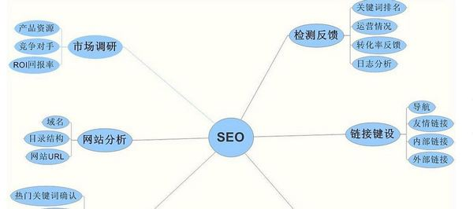
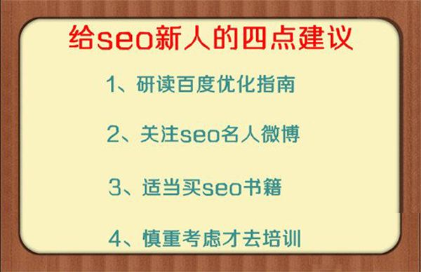

之前很多新手问笔者，学习SEO一般能多久学会，其实这样问题比较难回答，一般学得好的，只需要一个月就能掌握SEO的技术，而有的人学习一两年依然停留在发外链更新软文的层面，因此很多新手都学不好这门技术的原因也在这里，那么对于新手而言，如何更好的学习SEO呢?下面易优小编就来给大家简单讲讲如何学习好SEO。
在你打算学习SEO技术的时候，不妨先思考这四个问题：你想达到什么样的一个高度?你每天花费多少时间学习?你的学习方向是否正确?你是否每天做到坚持学习?
1.你想达到什么样的高度?
每一个学习SEO的人，都有着不同的目的，有的人想要找一份好的工作;也有人想通过这门技术在互联网上赚外块;也有人因为公司的原因;也有人想通过这门技术打造一支专业的团队;也有人想增加自己的产品在互联网上的销售量;而抱着不同目的来学习，效果也有所不同，有的想做SEO主管因此刻苦学习，有的只想做一个外链专员而学习，不同的结果也会让不同的人对SEO技术有不同的看法，重点是你想达到什么样的高度呢?
2.你每天花了多少时间来学习?
没有学不会，只有不去学，若是你愿意花费时间在某一领域去学习，那么一年后你肯定成为这个领域的老鸟，很多人说没有人教我，我学习天赋差，但你让他去打两把王者荣耀分分钟就能学会，为什么别人打王者荣耀会很快，因为他每天花费了很多时间去学习，因此学得快，那么你又花费了多少时间学习SEO技术呢?你要问易优小编多久能学会，我可以回答你质需要一个月就会了，但前期是你得努力。
3.你学习的方向是否正确?
笔者始终认为学习的方法远比努力的更重要，很多新手学习SEO的时候，就是没有一个方向，到网上随便找一些文章或者视频看，然后认为自己能自学成功，当然自学成才的也有不少人，但是你有多大自信成为这类人?很多人就是过于自信，在没有任何人指导而在网上随便找教程去看，然后不懂的又问一些SEO高手，吃到闭门羹后又开始抱怨这个行业内没有雷锋精神;
若想好好学习SEO，最好先从搭建一个网站，然后到关键词布局，再到流量的引导，再到流量的转换率的学习，都需要一个明确的学习方法。
那么针对零基础的新手，如何更好学习好SEO呢?主要从以下几个步骤来做：
1.先了解SEO的基本的专业术语
看到SEO群里面讨论的专业术语自己看不懂是不是很憋屈?想要学习找到教程但是里面讲的一些术语不明白苦不苦逼?然后把自己学不会的懒惰说成是没有天赋你还不害羞?如果你是零基础，不妨先去了解：外链、内链、锚文本、robot文件、死链、站群、快照、domain、样板文字、回链、访问时长、nofollow标签、地图、关键词堆砌、长尾关键词、网站被K、权重、面包屑导航、alt标签、黑帽、白帽、TKD标签等，是不是晕菜了?如果现在就晕菜的话，那么还是趁早放弃学习SEO吧。
2.了解搜索引擎的基本原理和搜索引擎优化指南
一般做SEO大多都是面向搜索引擎为主，一般都是以百度为主，360为辅，那么就应该要了解搜索引擎的自然排名原理，可以去看“百度优化指南”，因为搜索引擎把原理都记录在这里面，也希望SEOer能做高质量的内容，解决用户真实的需求，因此想要学好SEO，还需要去了解一下搜索引擎的工作原理，在这里就不做过多说明了。
3.了解基础的网站知识
很多新手都不会做网站，其实做网站并不难，现在程序大部分网上都有很多，不过作为新手而言，也是需要一番心思的，学会搭建基本的网站后，接下来就需要了解一些代码的相关知识，例如：CSS或者JS文件要外部调用、html静态路径、路径简化优化等，大家可以自己去了解一下。

4.学习SEO还需要自觉
相信很多新手在学习的时候，还需要一个学习的自觉性，每天自觉花费时间去学习，坚持下来你以后一定能有所收获，同时新手学习难免会遇到一些问题，很多人都缺乏一个解决问题的耐心，大多都是去找一些SEO朋友问，别人所理解的知识当然不能成为自己的，而且你找朋友，找大神，别人未必会天天理你啊。一般新手学习SEO过程中，产生问题最好先去找度娘了解了解，如果花费时间和精力依然不了解，不妨再找朋友交流，这样既节约别人的时间，也能增加自己的印象;同时即便你了解太多SEO理论知识，缺乏实践也是白费。
5.了解SEO中级知识
当SEO基础学习得还不错，那么可以尝试学习一些SEO中级的一些相关知识，诸如：用户体验优化、网站框架结构优化、图像优化、服务器优化、外链友情链接优化、网站代码优化等，这些都算是SEO的中级知识，只有做好这几个优化点，才能获得一个好的排名，获得一个不错的流量数据。
6.实操并做好站内优化和站外优化
当SEO中级知识都了解后，接下来就需要实操环节了，搭建网站之前，得深度分析用户需求，挖掘有价值的关键词，接下来就是网站内部优化和外部优化的工作了。
网站内部优化：网站内部优化主要内链分布、关键词排版布局、导航布局以及网站详细页的相关推荐的内链工作，良好的内链工作能让自己的网站再搜索引擎中有一个良好的印象，每一个网站都有一个核心侧重点，因此要围绕核心点来做内容;内容就需要提供高质量的原创内容，当把网站内部的内容都填满后，接下来就是网站外部优化了。
网站外部优化：很多新手认为网站外部优化仅仅只是发外链，其实不然，网站外部优化的目的是吸引流量，吸引搜索引擎蜘蛛，发外链仅仅只是其中一个环节而已，其中还包含自媒体外部优化、贴吧论坛优化、社交工具优化等，反正能吸引到流量的工作都必不可少。同时，对于新站来说也需要掌握一个度，这一点需要注意。
7.可以多分析SEO做得好的同行进行学习
学习同行的优化方法也是一个不错的学习方法，多分析一些同行做得好的地方，做得不足的地方，每一个同行都是我们学习的榜样，同时分析同行也是为了SEO技术后期所需要做的一个必要工作，前期就需要不断学习和模仿，取其精华祛出糟粕，可以分析同行的基础优化工作做得如何，站内站外优化做得如何，千万别老去盯着别人的网站设计去看，很多朋友就经常问易优小编，为什么我同行做的网站还没有我做得好看，却能排在前面啊?要是SEO排名技术是靠网站设计的话那么现在搜索引擎都乱套了。

8.不会写原创?文采不好?那就学吧
很多新手老是在这个问题纠结，我文采不好，怕学不好SEO，仿佛要让别人来帮他学习一样，而且谁说学习SEO一定要文采好?不会写原创?你不会从为原创写吗?为什么写不出来内容?因为你的肚子里没有水，所以脑子是一片空白的，所以写不出原创，即便挤出了原创，质量也是大打折扣的，不懂写原创就开始学为原创，然后多了解多学习，然后写一段时间的伪原创后，可以尝试写原创了，想要学好SEO原创能力，大多都是靠自己逼的。
9.想要事半功倍就找一个专业的老师辅导吧
一个专业的辅导老师能明确的给你一个学习方法，新手在刚刚接触SEO行业的时候，大多都急于求成，总是想知道多久能把排名做上去?怎么缩短优化的时间?网站迟迟不收录如何办?怎样提升网站的权重流量?这些问题一般的SEO朋友根本无法给你解答，只能请教一些经验丰富的导师，而且能节省很多方法;同时有一个老师指导，能起到监督自己的作用，明确一个学习的方向，特别在一些实操环节上，一旦卡住在那里，就需要花费更多的时间去解决，如果有一个导师就能轻松解决，节省了很多的宝贵的时间;
如果你想学好SEO技术，不要怕投资金钱和时间，现在所投资的，将来通过这门技术拿过来，也不是什么大事。
10.不断的学习和探索SEO更高深的技术
很多人觉得参加SEO培训后，觉得学到的并不多，因此就开始说SEO没有前途，SEO培训机构坑人等，其实师傅领进门修行靠个人，学习了SEO基本技术后，仍需要自己慢慢打磨和研究，从而才会把别人知识转换成为我们个人的，只有自己不断慢慢摸索出来的知识，才能适应这不断多变的SEO技术。
总结：本文重点仍是写新手如何更好的学习好SEO，虽然前两天也写过类似的文章，但是很多新手朋友仍然有这类的问题，SEO是一门技术，不是光看两个教程或者一两篇文章就能学会的，需要大量的实践和理论向结合，同时你只要肯努力去学习，多久学会你说了算，易优小编认为，只要你肯努力，学习一百个小时都能学会，自己的态度很重要。